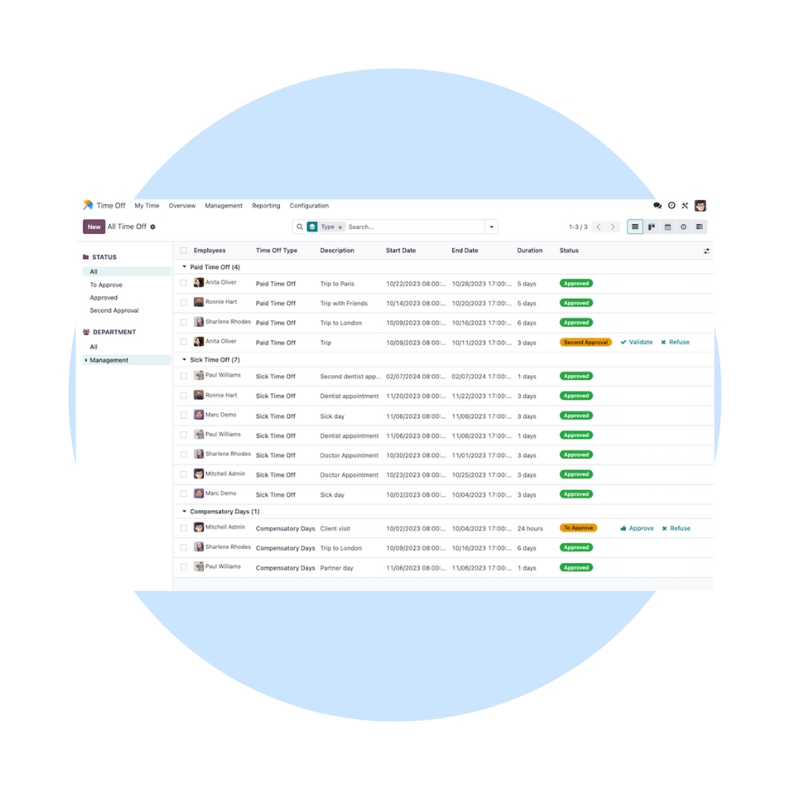
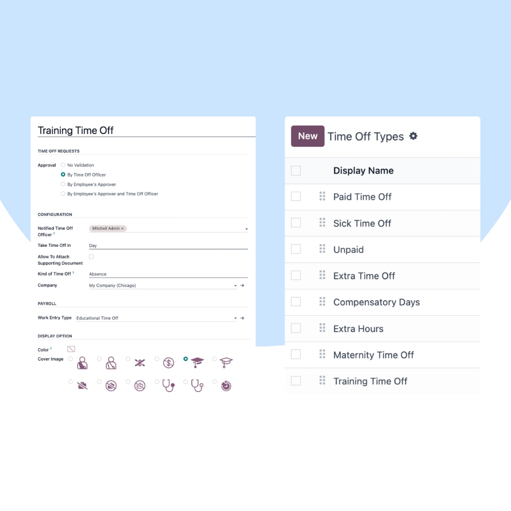
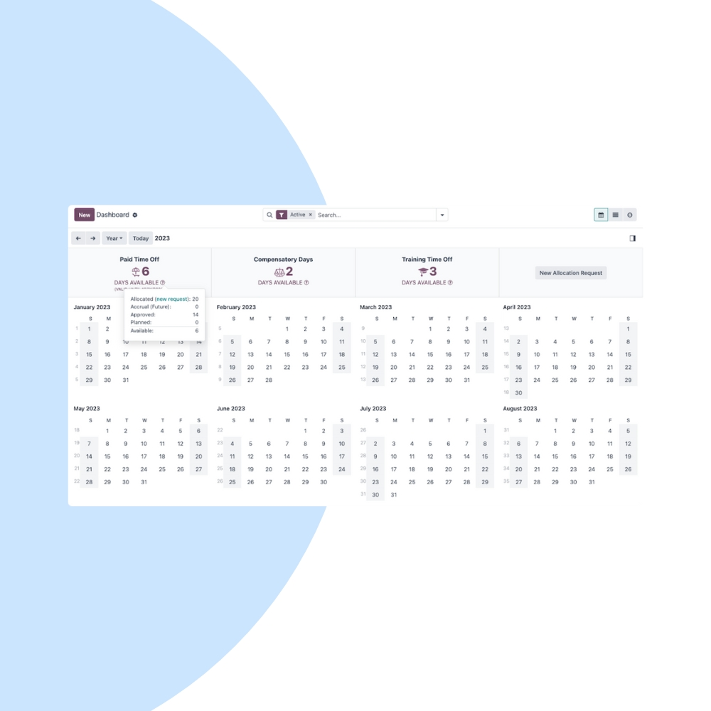

Simplify leave management with Odoo Time Off. We help organizations manage employee leaves, public holidays, approvals, and balances while maintaining full visibility of team availability.
We configure Odoo Time Off to match your leave policies, approval hierarchy, and compliance requirements. Integrate time off seamlessly with Employees, Attendance, Payroll, and Planning.


Our implementation ensures transparent leave tracking, smooth approvals, and accurate leave balances across your entire organization.
Employees request leaves easily from any device.
Managers approve requests in one click.
Accurate real-time leave balances.
View who is off and plan work effectively.
Manage country-wise holiday calendars.
Leaves flow directly into payroll calculations.
We help you continuously optimize leave policies, improve compliance, and ensure smooth HR operations as your workforce grows.
